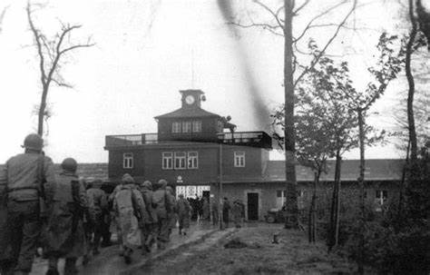
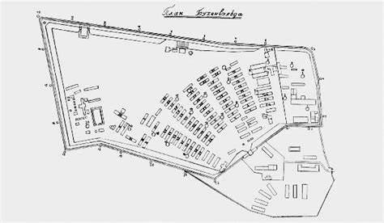
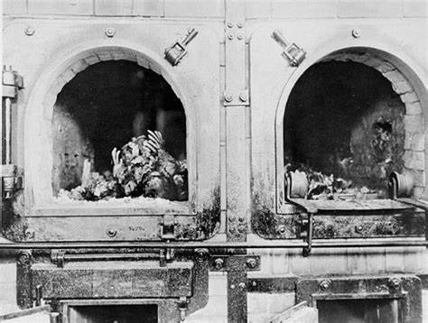
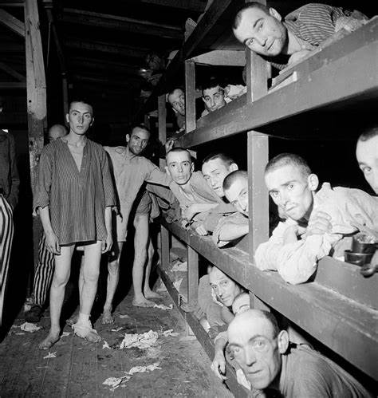

- Buchenwald Pendant la guerre

- Buchenwald Pendant la guerre
Buchenwald est un camp de concentration nazi créé en juillet 1937, il fut construit sur le terrain de l'Ettersberg. Construits par les prisonniers eux-mêmes, ceux-ci durent passer leur été à transporter des pierres de la carrière au camp. Les prisonniers, surnommés les "chevaux chantants" par les SS, furent enchaînés à des chariots pour tirer des charges énormes, tout en chantant. Destiné initialement à enfermer des opposants au Troisième Reich, pour la plupart communistes ou sociaux-démocrates, des enfants, des familles et toutes sortes de nationalitées : des italiens, des danois, des français, des norvégiens, des polonais, des néerlandais, des espagnols, des autrichiens, des croîtes, des yougoslaves… Il reçoit par la suite quelque 10 000 juifs arrêtés lors de la nuit de Cristal en 1938, ainsi que des Tsiganes, des homosexuels et des prisonniers de droit commun. Pendant la Seconde Guerre mondiale, des prisonniers de guerre y sont également envoyés. A leurs arrivée les déportés étaient jugés “aptes” ou “inapte” ceux qui étaient “aptes” à travailler (ceux qui en étaient capables de travailler) étaient envoyés dans des camps de concentration pour y mourir au petit feu en travaillant jusqu'à leurs mort et les “inaptes” (ceux qui n'étaient pas capables de travailler) étaient soit tués sur place soit envoyés dans des camps d’extermination.
premier commandant de Buchenwald fut l'officier SS Koch. Lui et sa femme, Ilse Koch, laissèrent derrière eux une terrible réputation d'assassins. Le but de Buchenwald était la destruction par le travail. La construction de la route menant du pied de la colline à l'entrée du camp fit des milliers de morts, au point que cette route était surnommée par les prisonniers la "rue du sang". D'horribles atrocités furent commises. Des milliers de prisonniers furent par exemple assassinés à l'infirmerie du camp par des injections de poison, tandis que beaucoup d'autres furent les victimes d'expériences médicales. Finalement, plus de 56 000 prisonniers moururent de ces expériences, d'épuisement ou de torture.
Après plus de 56 000 victimes, il est libéré en 1945 par l'armée américaine. La libération du camp s'amorce le 3 avril 1945, jour où geôliers et détenus sentent qu'il se passe quelque chose. C'est le jour du dernier appel des prisonniers. Moins de 25 000 prisonniers sont encore présents dans le camp après les évacuations massives des 6 et 7 avril. Le 8 avril, la décision est prise d'activer un émetteur afin de prévenir les Alliés et de leur demander de l'aide. Après plusieurs essais, une réponse arrive de l'Etat-major de la IIIe Armée américaine. Deux jours plus tard, on put voir des avions de reconnaissance survoler le camp. L'évacuation générale est alors ordonnée par le Kommandant du camp, Pister. La tension est à son comble. Le 11 avril sonne la fin du camp. La défense SS est vaincue par les unités d'attaque clandestines du camp et les américains. En huit années, plus de 250 000 hommes, femmes et enfants de multiples nations furent enfermés. 21 000 détenus furent sauvés. Cependant, l'évacuation des prisonniers ne signifie pas leur libération. En effet, les détenus libérés du camp de Buchenwald ne purent pas tous rentrer chez eux. Bien qu'ayant été évacué par le troupes américaines, le camp faisait partie de la zone d'occupation soviétique, et il fut donc remis aux troupes soviétiques. En 1945, au même emplacement que l'ancien camp de concentration, fut créé le camp spécial nuéro 2 de Buchenwald. Actif jusqu'en 1950, il servit comme camp d'internement pour des nazis et des opposants politiques. Environ 28 000 personnes y seraient passées. Plus de 7 000 en moururent.
- Plan de Buchenwald

- Four crématoir

- Dortoir
